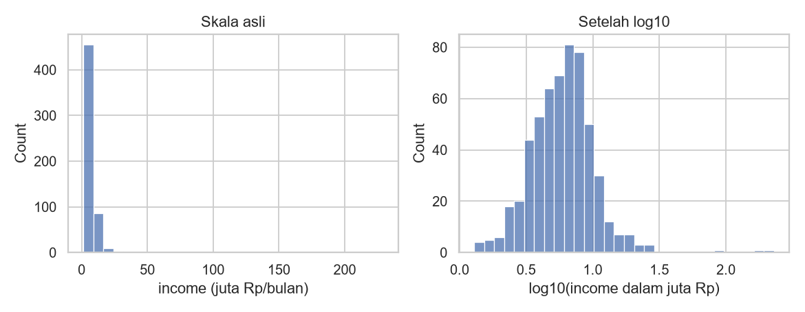
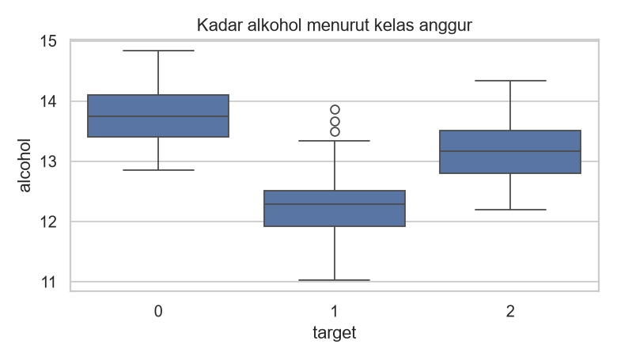
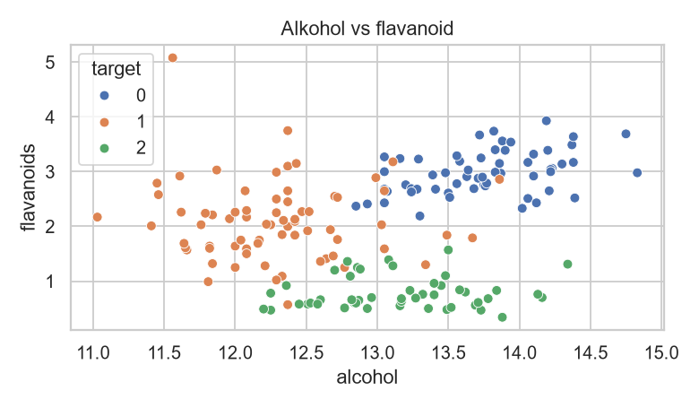
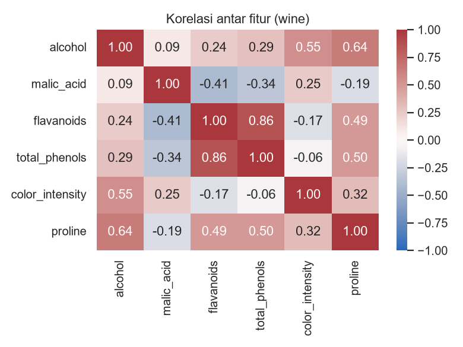

Visualisasi Data dengan Matplotlib dan Seaborn¶
Tujuan pembelajaran¶
- Memilih jenis grafik sesuai pertanyaan dan jenis data.
- Membuat histogram, boxplot, scatter plot, dan heatmap korelasi.
- Membaca grafik secara kritis, termasuk efek outlier.
Konsep dasar¶
Grafik membantu melihat pola yang tidak tampak dari angka. Matplotlib adalah pustaka dasarnya (figure berisi satu atau lebih axes); Seaborn dibangun di atasnya dan menyederhanakan grafik statistik dari DataFrame.
| Pertanyaan | Grafik |
|---|---|
| Bagaimana bentuk distribusi satu variabel numerik? | Histogram |
| Bagaimana distribusi dibandingkan antar kelompok, dan adakah outlier? | Boxplot |
| Apakah dua variabel numerik berhubungan? | Scatter plot |
| Bagaimana hubungan banyak variabel sekaligus? | Heatmap korelasi |
| Bagaimana perubahan menurut waktu? | Grafik garis (bab Forecasting) |
Dataset¶
- Data pelanggan sintetis (lihat pandas) untuk histogram.
- Wine bawaan scikit-learn (
load_wine): data publik 178 sampel hasil analisis kimia anggur dari tiga kultivar, 13 fitur numerik; targettargetberisi kelas 0, 1, 2. Dokumentasi: scikit-learn toy datasets.
Implementasi langkah demi langkah¶
Program examples/fundamentals/visualization.py membuat empat gambar. Jalankan dari root repositori karena gambar disimpan ke docs/assets/img/fundamentals/. Program lengkap ada di akhir bagian ini.
Langkah 1: menyiapkan pustaka dan data¶
| Kode | Penjelasan |
|---|---|
import matplotlib.pyplot as plt |
Modul pyplot dari Matplotlib, diberi nama pendek plt. |
import seaborn as sns |
Seaborn, nama pendek sns. |
OUT = Path(...); OUT.mkdir(parents=True, exist_ok=True) |
Menentukan folder tujuan gambar dan membuatnya bila belum ada (exist_ok=True mencegah galat jika sudah ada). |
sns.set_theme(style="whitegrid") |
Memilih tema tampilan: latar putih dengan garis bantu abu-abu. |
load_wine(as_frame=True).frame |
Memuat dataset Wine sebagai DataFrame; kolom target berisi kelas anggur (0, 1, 2). |
Konsep Matplotlib. Satu gambar adalah Figure (kanvas); di dalamnya ada satu atau lebih Axes (area grafik dengan sumbu x dan y). fig, ax = plt.subplots(...) membuat keduanya; semua fungsi Seaborn di bawah menerima ax= agar grafiknya digambar di Axes tersebut.
Langkah 2: histogram, bentuk distribusi satu variabel¶
Pertanyaan yang dijawab: bagaimana nilai income tersebar?
| Kode | Penjelasan |
|---|---|
df["income"].dropna() / 1e6 |
Membuang nilai hilang (dropna) lalu membagi 1e6 (satu juta) agar satuannya "juta rupiah". |
plt.subplots(1, 2, figsize=(9, 3.5)) |
Satu baris dengan dua grafik berdampingan; figsize = lebar dan tinggi dalam inci. axes[0] dan axes[1] adalah grafik kiri dan kanan. |
sns.histplot(..., bins=30) |
Membagi rentang nilai menjadi 30 kotak (bin) lalu menghitung berapa data di tiap kotak. |
np.log10(...) |
Logaritma basis 10: mengubah skala sehingga nilai sangat besar tidak lagi meregangkan sumbu. |
set_title, set_xlabel |
Judul dan label sumbu: selalu beri agar pembaca tahu isinya. |
fig.tight_layout(), fig.savefig(..., dpi=130) |
Merapikan jarak antar-elemen dan menyimpan gambar (dpi = ketajaman). |

Cara membaca. Sumbu-x adalah nilai income, sumbu-y adalah jumlah pelanggan (count) dalam tiap kotak. Pada skala asli (kiri) hampir semua data menumpuk di sisi kiri karena beberapa nilai ekstrem (sampai ratusan juta rupiah) memperlebar sumbu-x. Setelah log10 (kanan), bentuk distribusi mendekati lonceng dan sisa outlier tampak jelas di sisi kanan. Skewness income pada data ini 13,78 (baris terakhir keluaran program), tanda kemiringan ekstrem ke kanan.
Yang tidak dapat disimpulkan. Histogram menunjukkan bentuk distribusi, bukan alasan kenapa nilai ekstrem muncul; itu perlu diperiksa pada datanya.
Langkah 3: boxplot, membandingkan kelompok¶
Pertanyaan: apakah kadar alkohol berbeda antar kelas anggur?
| visualization.py | |
|---|---|
sns.boxplot(data=wine, x="target", y="alcohol") menggambar satu kotak untuk tiap nilai target (sumbu-x), dengan nilai alcohol pada sumbu-y.

Cara membaca. Kotak memuat 50% data tengah (dari kuartil 1 ke kuartil 3), garis di dalam kotak adalah median, "kumis" menjangkau data yang masih wajar, dan titik di luar kumis adalah calon outlier (aturan IQR; lihat Statistik). Kotak yang berada pada tinggi berbeda menunjukkan sebaran alkohol yang berbeda antar kelas, sehingga fitur ini berpotensi membantu membedakan kelas. Tumpang-tindih antar-kotak berarti satu fitur ini saja tidak cukup memisahkan kelas.
Langkah 4: scatter plot, hubungan dua variabel¶
| visualization.py | |
|---|---|
sns.scatterplot(x="alcohol", y="flavanoids", hue="target"): tiap titik adalah satu anggur; posisi horizontal = alkohol, posisi vertikal = flavanoid; warna (hue) = kelas, dijelaskan oleh legenda di pojok grafik.

Cara membaca. Kombinasi dua fitur memisahkan kelas lebih baik daripada satu fitur saja: kelas 2 cenderung berflavanoid rendah, sedangkan kelas 0 beralkohol dan berflavanoid tinggi. Namun kelas 1 dan sebagian kelas lain tumpang tindih. Korelasi alkohol–flavanoid seluruh data hanya 0,24 (baris kedua keluaran): hubungan keseluruhan lemah, tetapi pola per kelas terlihat. Korelasi bukan sebab-akibat: grafik ini tidak membuktikan alkohol memengaruhi flavanoid atau sebaliknya.
Langkah 5: heatmap korelasi¶
Konsep. wine[cols].corr() menghasilkan tabel korelasi Pearson antar-pasangan kolom (nilai -1 sampai +1). Heatmap mewarnai tiap sel menurut nilainya.
| Parameter | Arti |
|---|---|
annot=True, fmt=".2f" |
Menuliskan angka korelasi (dua desimal) di dalam sel. |
cmap="vlag", center=0 |
Palet biru-putih-merah dengan putih pada 0: satu warna untuk korelasi positif, warna lain untuk negatif. |
vmin=-1, vmax=1 |
Mengunci rentang warna pada -1 sampai 1 agar warna konsisten. |

Cara membaca. Sumbu-x dan sumbu-y sama-sama berisi fitur, sehingga tabel simetris dan diagonalnya selalu 1 (korelasi fitur dengan dirinya). Cari sel berwarna pekat: korelasi kuat berarti dua fitur membawa informasi mirip. Ingat bahwa korelasi hanya mengukur hubungan linear dan bukan sebab-akibat (lihat Statistik).
Langkah 6: keluaran teks¶
| visualization.py | |
|---|---|
Gambar tersimpan: ['boxplot-alcohol.png', 'heatmap-wine.png', 'histogram-income.png', 'scatter-wine.png']
Korelasi alcohol-flavanoids: 0.24
Skewness income: 13.78
Program mencetak nama gambar yang tersimpan, korelasi alcohol–flavanoids (0,24), dan skewness income (13,78).
Program lengkap (visualization.py)
Kesalahan umum¶
Hindari
- Membaca histogram tanpa memperhatikan skala sumbu yang terdistorsi outlier.
- Memotong sumbu-y pada grafik batang sehingga selisih tampak berlebihan.
- Memakai terlalu banyak warna atau tanpa judul dan label sumbu.
- Membuat kesimpulan kausal dari scatter plot.
- Tidak menyimpan grafik dengan
bbox/tight_layoutsehingga label terpotong.
Latihan¶
- Buat histogram
agedari data pelanggan. Apakah distribusinya simetris? - Buat boxplot
flavanoidsmenuruttargetpada wine. - Buat scatter plot
prolinevscolor_intensity. Apakah kelas terpisah? - Tambahkan
annot=Falsepada heatmap dan jelaskan apa yang hilang.
Ringkasan¶
Pilih grafik sesuai pertanyaan: histogram (distribusi), boxplot (perbandingan dan outlier), scatter (hubungan), heatmap (korelasi). Selalu periksa skala dan jangan menarik kesimpulan kausal.
Berikutnya: Statistik.